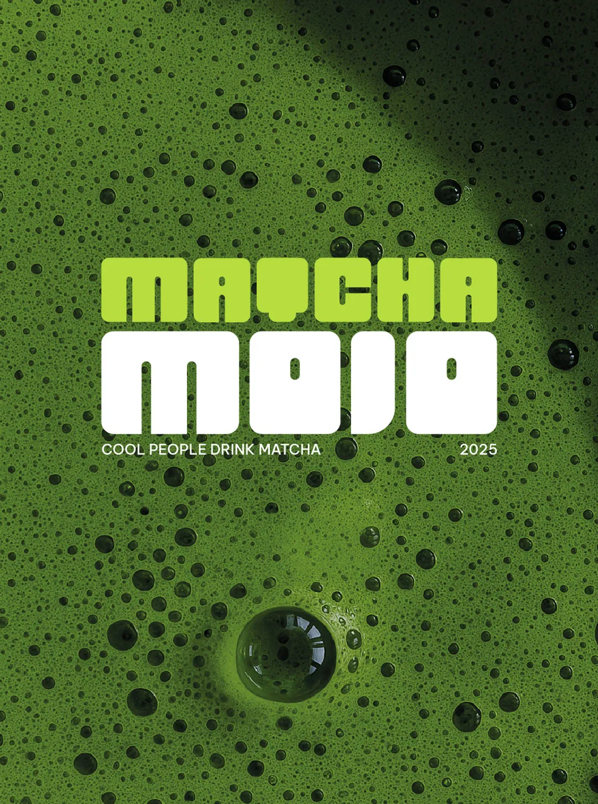
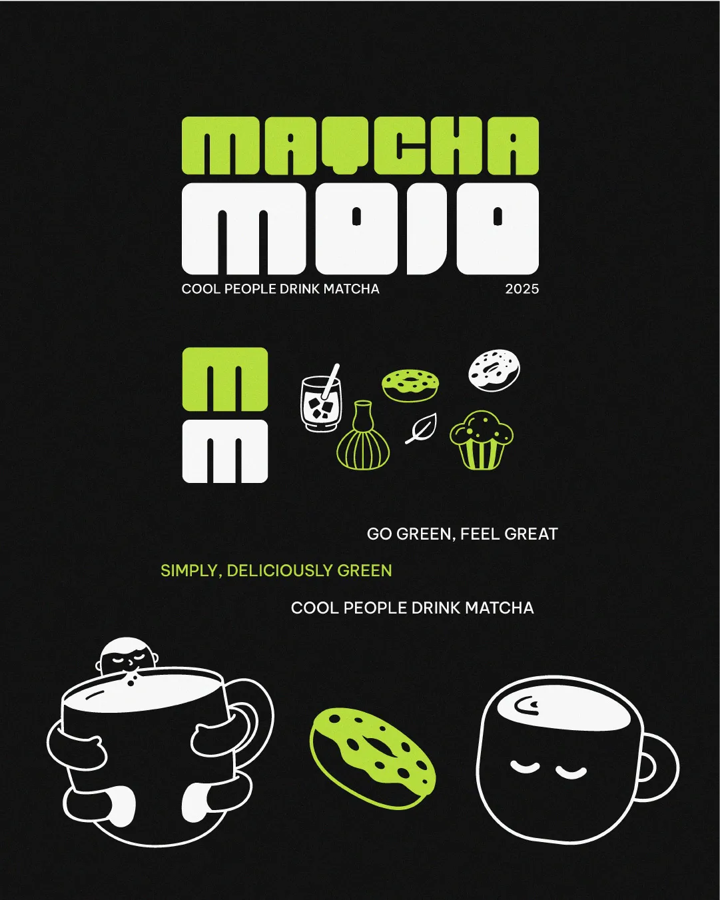
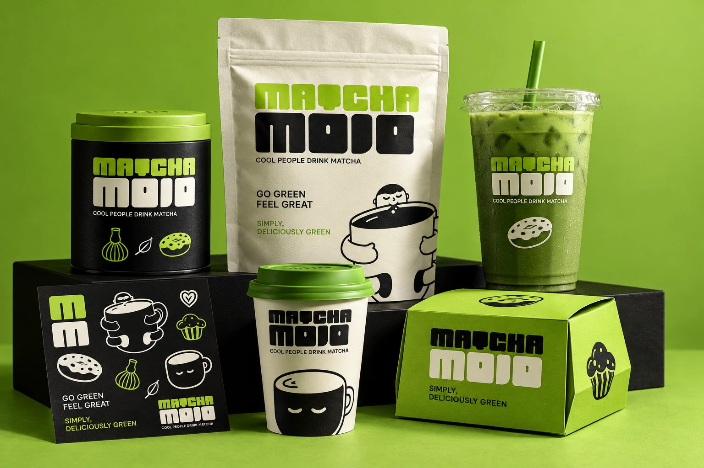
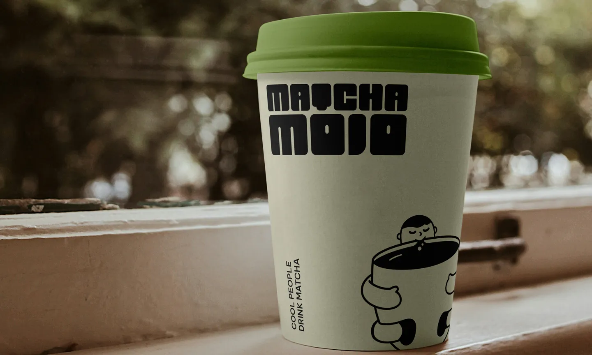
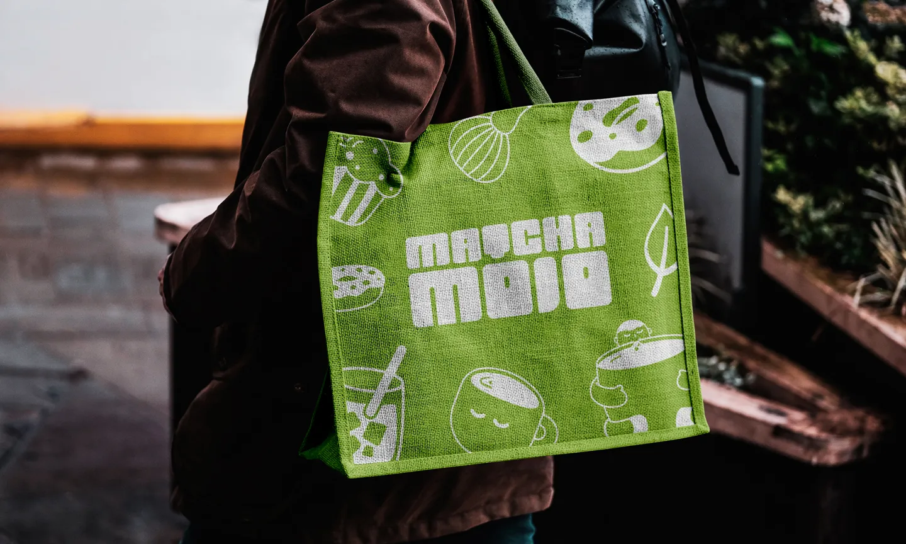
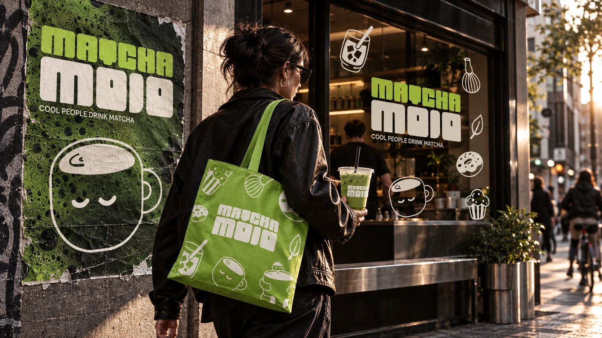
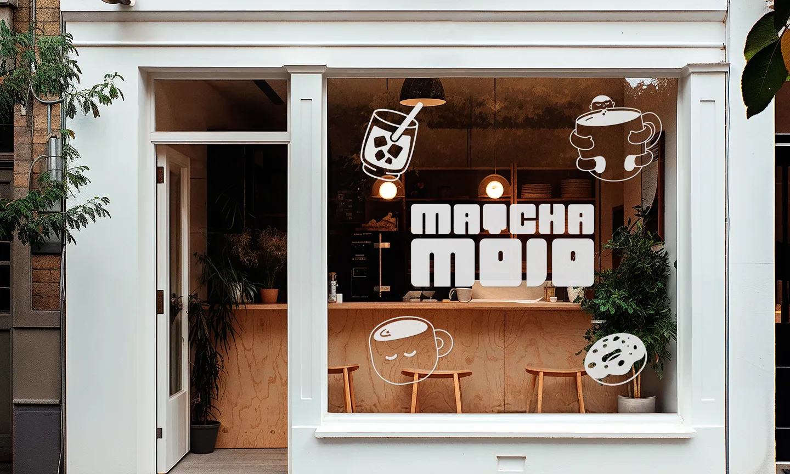

Disrupt the shelf
Heavy shapes and high contrast make the identity feel closer to streetwear and music culture than traditional tea packaging.
A high-energy identity that moves matcha away from quiet wellness codes and into a young, social and urban world.

Make matcha feel less ceremonial and more like a culture people want to join.
Matcha Mojo was created to demystify matcha culture for a younger urban audience. The brand keeps the product’s unmistakable green character, then replaces category restraint with humor, volume and movement.
The result is a flexible identity built for the full café journey: discovery, ordering, packaging, carrying and sharing.
“Cool people drink matcha.”
Heavy shapes and high contrast make the identity feel closer to streetwear and music culture than traditional tea packaging.
Short lines and friendly characters turn unfamiliar rituals into something approachable, humorous and social.
A compact set of repeatable assets scales from a tiny sticker to a full storefront without losing recognition.


The compact custom letterforms feel dense, friendly and instantly visible. A two-line lockup gives the name the presence of a poster headline.
A neutral sans-serif supports the expressive display voice, keeping short messages and functional information clean.
The illustrated world grows from the product itself: a whisk, a leaf, an iced drink, pastries and cups with quiet personalities.
The intentionally simple line work softens the heavy wordmark and creates assets that can be cropped, repeated or turned into patterns.
The hierarchy stays stable across formats: wordmark first, character second, short brand voice third. Color inversion creates variety without fragmenting the family.



Campaign posters, windows and merchandise create one continuous brand moment: visible from a distance, rewarding up close and easy to recognize in motion.


The storefront proves that the system does not depend on a single hero image. Logo, icons and palette can move independently, then reunite as one recognizable environment.
Matcha Mojo demonstrates how naming, verbal identity, custom typography and illustration can work as one system rather than as separate decorative layers.